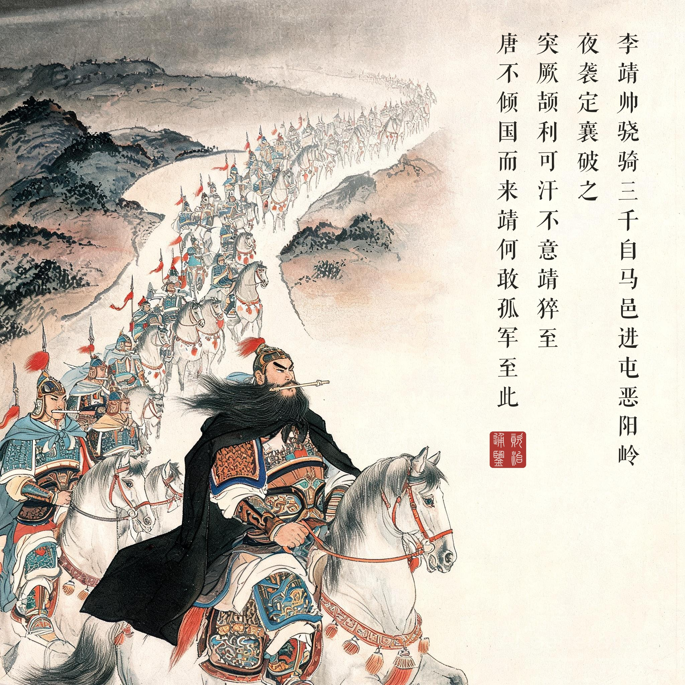
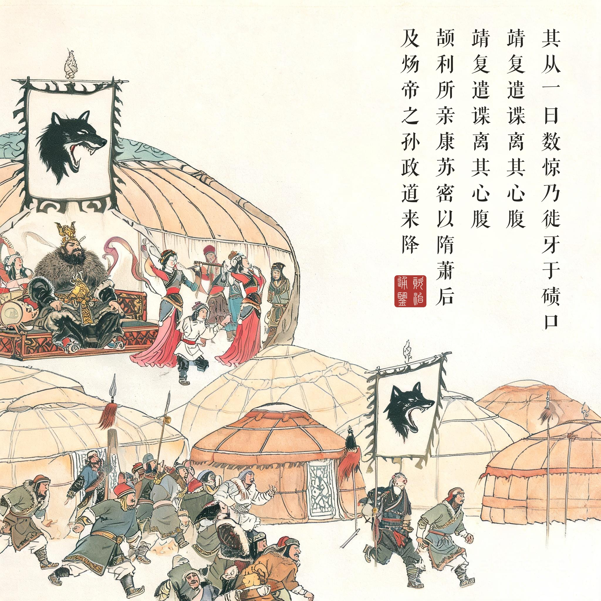
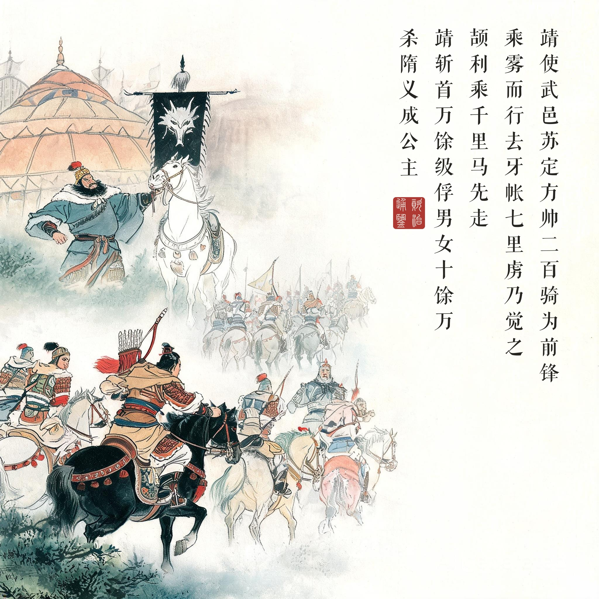
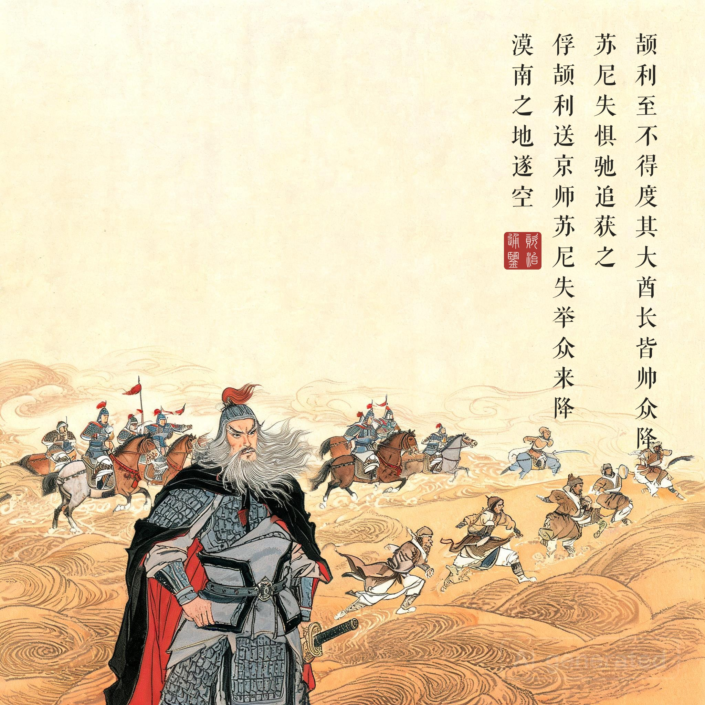

《资治通鉴 · 卷第一百九十三 · 唐纪九》太宗文武大圣大广孝皇帝上之中贞观三年至四年（公元 629-630 年）
（据 daizhigev20《资治通鉴》底本节录）
春，正月，李靖帅骁骑三千自马邑进屯恶阳岭，夜袭定襄，破之。突厥颉利可汗不意靖猝至，大惊曰：“唐不倾国而来，靖何敢孤军至此！”其从一日数惊，乃徙牙于碛口。靖复遣谍离其心腹，颉利所亲康苏密以隋萧后及炀帝之孙政道来降。……（四年正月，颉利请降，唐遣使安抚；李靖与李世勣谋乘其懈怠）靖使武邑苏定方帅二百骑为前锋，乘雾而行，去牙帐七里，虏乃觉之。颉利乘千里马先走，靖军至，虏众遂溃。唐俭脱身得归。靖斩首万馀级，俘男女十馀万，获杂畜数十万，杀隋义成公主，擒其子叠罗施。颉利帅万馀人欲度碛，李世勣军于碛口，颉利至，不得度，其大酋长皆帅众降，世勣虏五万馀口而还。斥地自阴山北至大漠，露布以闻。……（颉利就擒）行军副总管张宝相帅众奄至沙钵罗营，俘颉利送京师，苏尼失举众来降，漠南之地遂空。
贞观三年正月，李靖率骁骑三千从马邑进屯恶阳岭，夜袭定襄，攻破了它。突厥颉利可汗没料到李靖突然到达，大惊说：“唐军若不是倾国而来，李靖怎么敢孤军到这里！”他的部众一天之内多次惊乱，于是把牙帐迁到碛口。李靖又派间谍离间他的心腹，颉利的亲信康苏密带着隋萧后和炀帝之孙杨政道前来归降。……（贞观四年正月，颉利请求归降，唐朝派使者安抚；李靖与李世勣商议趁其懈怠进攻）李靖派武邑人苏定方率二百骑为前锋，乘着大雾行进，离牙帐七里，敌人才察觉。颉利乘千里马先逃，李靖大军到达，敌众随即崩溃。唐俭脱身回朝。李靖军斩首万余级，俘获男女十余万，缴获杂畜数十万，杀隋义成公主，擒获她的儿子叠罗施。颉利率一万多人想渡大漠北逃，李世勣驻军在碛口，颉利到后无法渡过，他的大酋长们都率众投降，李世勣俘获五万余口而回。唐朝疆土从阴山以北拓展到大漠，发布露布告捷。……（颉利就擒）行军副总管张宝相率军突然抵达沙钵罗营，俘虏颉利送往京师，苏尼失率全部部众归降，漠南之地从此空了。
以速度打认知。夜袭定襄的军事内核是一场认知攻击：李靖只有三千骑，但他的战术目标不是歼敌，是让颉利“不意”。颉利那句惊呼完美暴露了认知被劫持的过程——他推断“唐军倾国而来”，于是迁帐、于是众心离散、于是心腹叛降。三千骑的真实兵力在颉利的想象里扩张成了一支倾国之师。唐军随后一年里做的每一步（离间、抚降、乘雾、扼碛）都是在收割这个认知战果。读画看第一幕：夜色山道上只有一条行军线——这条线的长度就是三千，而它投射在颉利心里的影子，是十万。
一个王朝的雪耻账。武德年间突厥年年入寇、渭水之盟的耻辱，是李唐立国后最疼的一处。这一战的总导演其实是两个人：前线的李靖与后方的李世勣，一个攻心、一个锁路（碛口）。特别值得注意的是时间表：贞观三年十一月大举出兵，四年正月定襄，二月阴山决战，三月颉利被送抵长安——从开打到亡国，一个冬天。此后“天可汗”体系的建立，靠的不是怀柔，是这一夜的奔袭打出来的威慑本金。
两个被随手处理掉的人。本回藏着两个值得停留的细节。一个是义成公主——一位在史书边缘为故国复仇到死的女人，被李靖军所杀，她儿子叠罗施被擒（后来唐朝对叠罗施颇优容）；另一个是唐俭——正代表唐朝在颉利帐中谈判，李靖进攻时根本没打算通知他（“唐俭辈何足惜”），他运气好逃了出来。这两个细节合起来读，就是战争机器的真实质感：大战略之下，个人的命运是耗材。连环画四幕里不画他们的下场，画的是他们入局的位置——这是叙事的分寸。